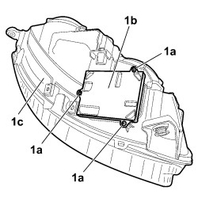

5540B43 CONTROL UNIT OF ONE RIGHT GAS DISCHARGE LIGHT CLUSTER ONE LH OR RH RR WITH LIGHT CLUSTER REMOVED
- Path
- Procedures > 55 ELECTRICAL EQUIPMENT > 5540 EXTERIOR LIGHTING > 5540B HEADLAMPS > 5540B43 CONTROL UNIT OF ONE RIGHT GAS DISCHARGE LIGHT CLUSTER ONE LH OR RH RR WITH LIGHT CLUSTER REMOVED
- Kind
- repair procedure (removal / refitting; the operation number is the code)
- Applies to
- all engines; all production periods
- Interactive page
- https://sloeber94.github.io/elrnDB-fCrm/en/#/194000739
Applies to: all engines; all production periods
 Removing
Removing
 Refitting
RefittingWith the light cluster detached from the vehicle:
1. Undo the bolts (1a) fixing the control unit (1b) and remove it from the light cluster (1c).
Description | Connector | |
|---|---|---|
1b | HEADLAMP ALIGNMENT CONTROL UNIT (CAF) |

Applies to: all engines; all production periods
Refitting
Removing- Check that the control unit is not damaged.
- Place the control unit in position and tighten the bolts fixing it to the light cluster.
Description | Connector | |
|---|---|---|
HEADLAMP ALIGNMENT CONTROL UNIT (CAF) |